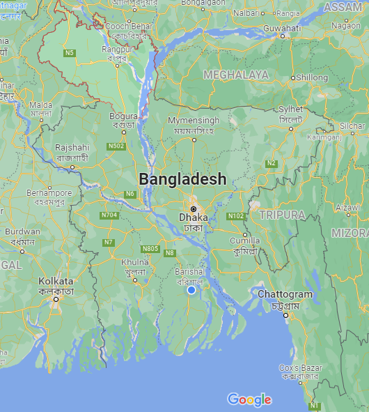

রংপুর/RANGPUR
রংপুর বিভাগ বাংলাদেশের আটটি প্রশাসনিক বিভাগের একটি। এটি বাংলাদেশের উত্তরাঞ্চলের ৮টি জেলা নিয়ে গঠিত।
২০১০ খ্রিষ্টাব্দের ২৫ জানুয়ারিতে বাংলাদেশের সপ্তম বিভাগ হিসেবে ঘোষিত হয়। রংপুর বিভাগের পূর্বের ভারতের অসম
ও মেঘালয় রাজ্য এবং ময়মনসিংহ বিভাগের জামালপুর জেলা , পশ্চিম ও উত্তরে ভারতের পশ্চিমবঙ্গ রাজ্য এবং দক্ষিণে
রাজশাহী বিভাগ অবস্থিত।

নামকরণের ইতিহাস
নামকরণের ক্ষেত্রে লোকমুখে প্রচলিত আছে যে পূর্বের ‘রঙ্গপুর’ থেকেই কালক্রমে এই নামটি এসেছে। ইতিহাস থেকে জানা যায়
যে উপমহাদেশে ইংরেজরা নীলের চাষ শুরু করে। এই অঞ্চলে মাটি উর্বর হবার কারণে এখানে প্রচুর নীলের চাষ হত। সেই নীলকে
স্থানীয় লোকজন রঙ্গ নামেই জানত। কালের বিবর্তনে সেই রঙ্গ থেকে রঙ্গপুর এবং তা থেকেই আজকের রংপুর। অপর একটি
প্রচলিত ধারণা থেকে জানা যায় যে রংপুর জেলার পূর্বনাম রঙ্গপুর। প্রাগ জ্যোতিস্বর নরের পুত্র ভগদত্তের রঙ্গমহল এর নামকরণ
থেকে এই রঙ্গপুর নামটি আসে। রংপুর জেলার অপর নাম জঙ্গপুর । ম্যালেরিয়া রোগের প্রাদুর্ভাব থাকায় কেউ কেউ এই জেলাকে
যমপুর বলেও ডাকত। তবে রংপুর জেলা সুদূর অতীত থেকে আন্দোলন প্রতিরোধের মূল ঘাঁটি ছিল। তাই জঙ্গপুর নামকেই রংপুরের
আদি নাম হিসেবে ধরা হয়। জঙ্গ অর্থ যুদ্ধ, পুর অর্থ নগর বা শহর। গ্রাম থেকে আগত মানুষ প্রায়ই ইংরেজদের অত্যাচারে নিহত
হত বা ম্যালেরিয়ায় মারা যেত। তাই সাধারণ মানুষ শহরে আসতে ভয় পেত। সুদূর অতীতে রংপুর জেলা যে রণভূমি ছিল তা
সন্দেহাতীত ভাবেই বলা যায়। ত্রিশের দশকের শেষ ভাগে এ জেলায় কৃষক আন্দোলন যে ভাবে বিকাশ লাভ করে ছিল তার কারণে
রংপুরকে লাল রংপুর হিসেবে আখ্যায়িত করা হয়েছিল।
ইতিহাস ও ঐতিহ্য
রংপুর বাংলাদেশের রংপুর বিভাগের অন্যতম প্রধান শহর এবং ১৮৬৯ সালে প্রতিষ্ঠিত বাংলাদেশের প্রাচীনতম একটি পৌর
কর্পোরেশন। রংপুর শহর ১৭৬৯ সালের ১৬ ডিসেম্বর বিভাগীয় সদর দপ্তর হিসেবে স্বীকৃতি লাভ করে। ১৮৯০ সালে তৎকালীন
পৌর কর্পোরেশনের চেয়ারম্যান ডিমলার জমিদার বাড়ির রাজা জানকীবল্লভ সেন রংপুর শহরে জলাবদ্ধতা ও মশার ও ম্যালেরিয়ার
প্রাদুর্ভাব নিরসনে[৪] তার মা শ্যামাসুন্দরীর নামে[৫] যে খালটি পুনঃখনন করেন তাই আজকের শ্যামা সুন্দরী খাল নামে পরিচিত
এবং তার দানকৃত বাগান বাড়ির জমিতে ১৮৯২ খ্রিষ্টাব্দে আজকের পৌরসভা ভবনটি গড়ে ওঠে। বর্তমানে রংপুর সিটি কর্পোরেশনের
আয়তন ২০৫.৭০ বর্গ কিঃমিঃ। রংপুর সাতশত বছরের ঐতিহ্য "শতরঞ্জি", "হাড়িভাঙ্গা আম","তামাক" এর জন্য বিখ্যাত।
রংপুরকে "বাহে'র দেশ" বলা হয়।